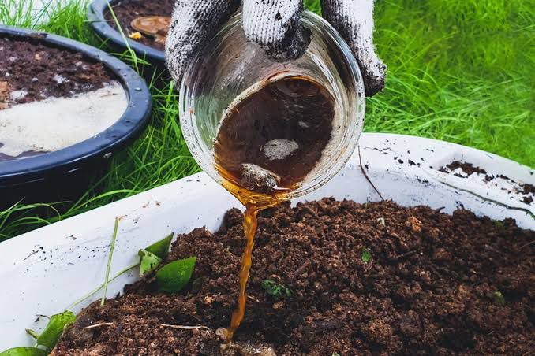

🌿 Pupuk Organik Cair (POC)

🧂 Bahan:
- 1. Sisa nasi basi, kulit buah, atau sayuran.
- 2. Air bekas cucian beras, air kelapa, atau air cucian ikan.
- 3. Gula merah, gula pasir, atau tetes tebu (molase).
- 4. Air biasa.
- 5. EM4.
🔧 Alat:
- 1. Wadah seperti ember atau galon yang bisa ditutup.
- 2. Alat pengaduk.
🧪 Cara Membuat POC dari Sampah Dapur:
- 1. Potong kecil-kecil sampah dapur agar cepat terurai.
- 2. Masukkan ke dalam galon, tambah 500 ml air dan 500 ml air cucian beras.
- 3. Tambahkan 25 gram gula merah dan 2 tutup botol EM4, lalu aduk rata.
- 4. Tutup rapat, simpan di tempat teduh selama 2 minggu. Setiap hari buka tutup sebentar untuk buang gas.
- 5. Setelah itu, diamkan cairannya selama sebulan. Lalu jemur dalam botol bening sampai warnanya jadi cokelat kehitaman dan baunya seperti tape.
- 6. Sebelum dipakai, campurkan 3 sendok makan POC dengan 1 liter air. Bisa disiram ke tanah atau disemprot ke tanaman.